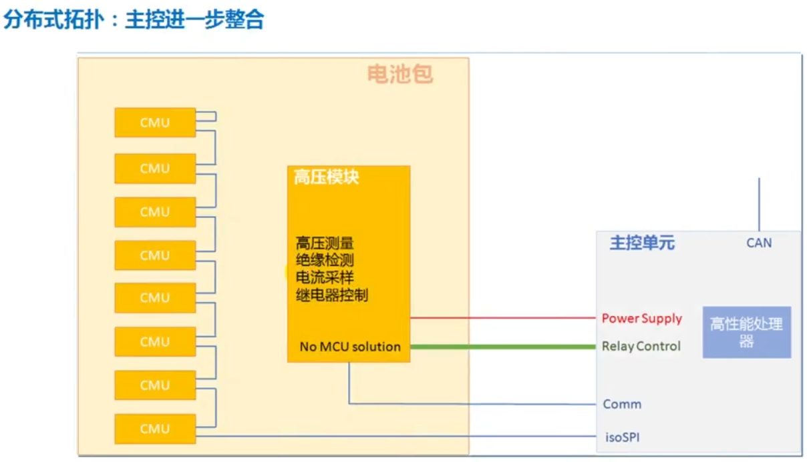
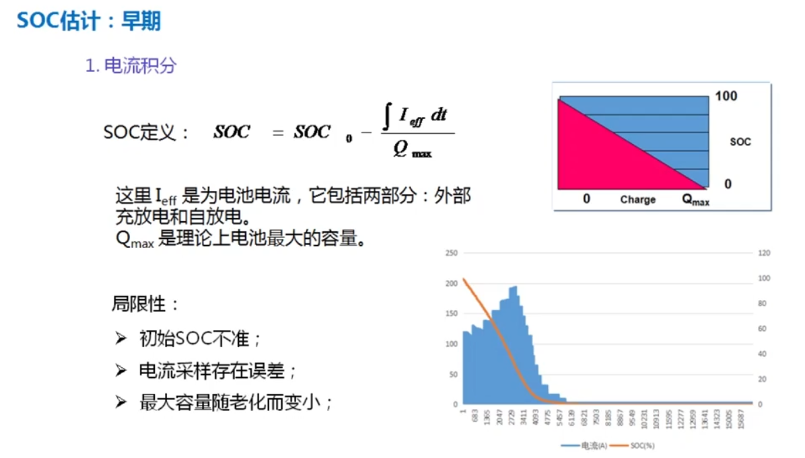
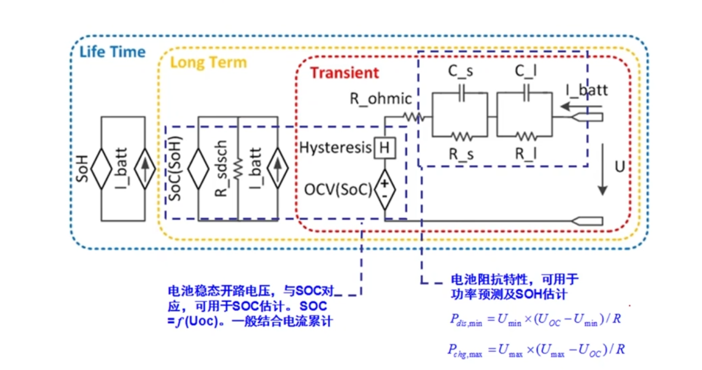

引言
本文主要是对BMS行业内容的一个扫盲，纯属个人经历及网上资料得出的结论，如有不恰当的地方欢迎指出
1、电池管理系统的需求分析
这里以电动汽车为例，用户对车辆的一个需求主要分为以下几点：
- 车辆的动力性能
- 车辆的续航里程
- 车辆的安全性
- 使用过程中的便捷性
这里从电池的角度上来讲
- 车辆的动力性能可以由电池本身的最大输出功率、能量密度等来体现
- 车辆的续航历程可以由电池的能量密度、剩余能量估计等来体现
- 由于目前电车的用电压都较高，远远超出了人体的安全电压电流范畴，特别是充电过程中的电压甚至能达到600V，所以在使用的过程中，电池需要面对更为严苛的用电安全标准，包括热、寿命、穿刺失控等
- 使用的便利性可以体现在充电时长、能量损耗、电池寿命上
这里可以将电池系统的需求列出来
- 最大功率
- 剩余能量
- 安全性
- 充电
- 寿命
上面是整车体现出对于电池系统的一个需求，而电池系统是个由电芯、铝排(汇流排)、电池管理系统、热管理、机械零部件等耦合起来的系统，而这篇文章里我们仅关注电池管理系统
对于上面电池系统中的各个需求我们也可以通过分解拆为电池管理系统的各个功能模块
- 最大功率：电池生产出来之后，电池的最大功率其实和它自身的SOC、温度、老化状态等等相关，这个值也是一个时变的值，而我们要及时的去获取这个值，并能去控制最大功率的输出，而这也就是我们的功率控制模块(SOP)
- 剩余能量：电池的剩余能量和其SOC、健康状态(SOH)或能量状态(SOE)有关，这就是剩余能量管理
- 安全性：可以分为高压安全和通过电池状态的监控来提高电池管理系统的安全性，安全管理功能
- 充电：充电管理功能
- 寿命：SOH，可靠使用时间还有多久等
由此我们得到了从整车层面上倒推回来的电池管理系统的最基本的功能，但我们还需要一些更基础的信息去实现这几个功能，这里放一个结构图：
上图中SOC作为最重要的物理量，在一些不复杂且需求并没有那么高的系统里，仅有SOC就可以满足一定的项目需求了
基于上图进行详细的展开，从基础量测量开始

普通的项目包含最左侧基础信息采样即可，后两项为针对电车上的

中间层，部分项目仅包含SOC即可，通过SOC计算剩余能量，这里左边四个量均解释过，这里就不再赘述
关于电池温度这里稍微提一下，正常项目采集的电池温度均为电池表面温度，而电池在使用过程中，内部温度会高于表面温度，部分场景中可以看到电池放电停止了，但是表面温度偶尔还会上升的情况，所以对于一些要求严格的产品来说，仅测量电池表面温度是不对的，还要根据电池的热特性模型取计算电池的内部温度
微短路，在电池生产过程中参杂或是锂富集、刺穿会导致电池产生漏电流，长时间的漏电流会导致电池自身漏电流逐渐增大，会有过热失控的风险
上述两个技术都不是非常成熟的技术，但相信在不久的将来，这两项技术能真正的行之有效的应用起来
均衡管理：由于电芯自身内阻、老化时间、焊接工艺等影响，电芯本身放电或充电过程中，能量差距逐渐累积，最终导致不同电芯能量能量差距较大，这对整体电池包来说并不是一件好事，并且长时间处于此种状态下电池会有报废风险，所以这里需要让高电量电芯的能量释放出去或是充给低电量电芯中，前一种是我们说的被动均衡，后一种则是主动均衡，对于主动均衡也存在很多种策略，包括均衡在电芯一致性达到什么样的条件下开启、开启后的持续时、所使用的均衡电流大小、均衡开启通道数等
热管理低温加热部分，会有另外的文章分析，这里不做赘述
充放电管理：通过当前温度、SOC、一致性、老化程度等计算出合适的充放电功率，并且上报给车机
继电器控制：异常状态下的充放电切断，如预充放电(防止大电压直通)、Mos失效等
通讯分为板内板外，Bms和采集系统如果是一块板，就是板内通讯，如SPI，板件一般是通过CAN或LIN
故障处理：一般故障分为多级
其中有一点要注意，部分电池的电流控制是通过外部整车或者整机端来实现的，并非是通过电池本身实现的

2、BMS数据收集
2.1、电芯数据
在BMS开发过程中，所有的功能都需要依赖于原厂提供的电芯数据(或是公司测试的数据，这个一般都会有公司自己测试的数据)
这里列举所有需求的数据，大体可以分为两类，一类基础数据用于计算SOC、SOE、SOH等数据，另一类高级数据则是用来建模以及提高模型精度的
接下来会对各个部分所需数据做一个详细的说明：
充放电截止电压表：

此表可以让工程师知道高温、低温下电池的截止电压，用于标定或矫正SOC，还可以作为欠压故障或预警的参考值
表中分为持续电流和脉冲电流两种情况，在复杂系统中，可以根据当前放电状态来查询不同表格获取值
这里有两个计算公式，并不确定是否是完全正确的：
Pdsgmax = (ocv - umin) * umin/R 物理量定义：umin最小端电压，R内阻
Pchgmax = (umax -ocv) * umax/R 物理量定义：umax最大端电压，R内阻
SOC-OCV关系表：

此表格只是用于示例的充电表格，还有对应的放电表格
表格可以将电池各温度各老化程度下的SOC统计出来，最终画出一幅包络曲线或散点图，电池静置合适的时间之后可以通过用当前情况下的开路电压对比SOC-OCV表去获得当前SOC，用于修正目前SOC计算偏差或是直接使用
SOC = SOCocv + 电流积分/总容量
一般开机就是以此为基准，求得SOC的，当然这是普通算法的用法，对电池建模的过程中，电池可以等效成一个开路电压源串上一个电阻还有一个电阻和电容的并联形式，而这个电压源就是由SOC-OCV得出的
当然此表格是非常复杂的，如果只是简单的储能项目或者是家用电器，不用这么麻烦，仅需要一个常温下的SOC表格即可，变温部分用其他办法修正
电池内部温度可以用这个公式算：Bernadi方程。发热功率q=I（ocv-u）+IT*du/dt I当前电流，T当前温度，u当前电压，OCV使用SOC查表得到的
最大充放电电流限制表：

此表一般是厂家提供，当然也可以自己测试一个，不过不是很准就是了
充放电最大电流和当前温度SOC还有充放电形式有关，使用过程中及时查表更新
电池容量特性：
主要是通过温度充放电倍率、循环次数测得一个容量参数
自放电率：

主要是和SOC、温度、时间有关，用来精确电池自放电内容，提高SOC和SOE的准确度
一般温度SOC越高，自放电率越大
如果电池在静置自放电过程中，我们测得的自放电率高于表格中的自放电率就可以判定出是否有微短路或者失效
以上就是基础的五个数据及对应图表
HPPC测试原始数据：

HPPC数据主要是由脉冲放电以及脉冲充电测得的，一般来说测试一个放电的HPPC就足以满足一些精度不那么高的项目需求
此原始数据可以使用Matlab中示例程序进行拟合获取模型
将红框中的数据内容改为自己的HPPC结果就行，运行即可得到对应的模型数据

程序会使用1-3阶等效模型，并通过单次脉冲得到的电压跌落以及恢复稳态图去做局部最优解，然后通过多次局部最优解

随后根据获取计算误差调整参数，获得全局最优解，最后输出一个电池的Simulink模型：
一般考虑到运算平台的算力以及模型计算结果的重合度，取三阶模型即可
说回正题，继续来看HPPC图表的内容
图中的测试，在单个充放过程中，首先会有一个短时的充电脉冲，然后静置一段时间，再有一个放电脉冲，放电脉冲结束后，进行一个小电流充电去调整SOC，然后继续静置————经过这一轮之后就得到了电池的整体动态特性的原始数据
连续多次之后，就可以的出一个类似SOC-OCV的趋势模型
放电脉冲过程中，电压表现出来的现象可以由其内阻、感性、容性共同解释，这个后续单开章节描述
交流阻抗数据：
这个测试其实和HPPC测试比较类似，只是HPPC是时域分析数据，交流阻抗则是频域分析
这里需要注明，交流阻抗测试数据是使用小的交流电，从0.1hz - 100khz类似范围扫频得到的结果，这里这种方式和环路分析仪比较类似，得到的数据包括但不限于阻抗特性图和伯德图等
为什么要用小的交流电呢，因为电池只有在小交流激励的时候才可以看作是一个线性系统，才可以研究它的输入和输出的相位角、幅值关系
这里列举一下阻抗的定义，给被测系统G(w)输入一个扰动函数X，我们会得到一个响应信号Y，将公式写出可以得到：
Y = G(w)X
我们这里测试输入的是正弦电流信号，所以输出的Y也是正弦电势信号，此时G(w)就是频响函数，即为系统的阻抗用Z来表示，当然如果X为正弦电势信号，那么Y就是正弦电流信号，此时G(w)就是被测系统的导纳，用Y来表示
导纳和阻抗统称为阻纳，用G表示，阻抗于导纳为倒数关系，Z=1/Y
由于G是一个随w变化的函数(w为角频率，通常取w=2Πf)，所以我们通常用复变函数表示：

回到我们这节开头的图，左边这张交流阻抗侧视图，越往右边，频率越小，越往左边频率越大，图像与横轴的交点为电池的欧姆阻抗，这张图其实有很多的看法，这里举个标准的例子
这张标准图谱非常详细的描述了各种阻抗，其中：
- 横坐标Zre为阻抗的实部，Zim为阻抗的虚部
- 第一部分超高频部分，阻抗与横轴的交点为欧姆阻抗Rb
- 第二部分高频部分，半圆指的是锂离子通过电解质阻抗Rsei
- 第三部分中频部分，半圆指的是电荷的传递阻抗，也称电极极化阻抗Rct
- 第四部分低频部分，45°直线指的是锂离子扩散阻抗，也成为浓差极化阻抗W
最终电池的阻抗测试结果可以等效出来一个等效电路模型
这里为防止混淆，对几个关键变量的内容做一个详细说明
Cdl：工作电极于电解质之间电容
Csei：界面电容通常每个界面都会存在一个电容
CPE：相位角原件，主要包括，扩散阻抗W、电感L等
这里没找到合适的伯德图
增益和相位常常用来描述系统的稳定性，而在电池的伯德图中
增益代表：增益描述系统输入输出之间的信号比例关系，表示输出信号经过系统之后的放大或衰减程度，增益越大和越小都会影响系统的稳定，增益过大系统容易出现震荡，增益过小系统容易出现误差，增益越大系统的响应速度越快，反之越慢；适当的增益可以抑制干扰
相位代表：相位描述系统的输出是否同步，通常相位角为0时系统的输出与输入同步，相位角不为零代表系统输出会有超前或滞后现象；描述系统的稳定性时，通常会用相位裕度一词来特指能够容忍的相位差，相位裕度越大，系统对外部干扰和参数变化的鲁棒性就越强，一般采取相位角-90°为宜；
这里举两个关于电池的增益和相位对系统的输出关系例子：
增益：这个很好理解，增益越大，表现出来越像是放大器，增益越小表现出来越像一个衰减器，增益等于零类似于传输线路或者连接器
相位：当相位角越大时，对应输出信号有很大的相位延迟，代表电池往往更加呈现出电感性质，电感对电流的变化响应有一定滞后
当相位角越小时，对应输出信号有较小的相位延迟或超前，代表电池往往呈现出电容性质或电导性质，电容对电流的响应速度较快
当相位角趋于零或等于零时，输入输出信号没有相位差，代表电池往往呈现出电阻的心智，没有电感和电容的影响
暂时先分析到这里
除此之外，它还有一个非常重要的部分，不同温度、SOC、老化情况下，电池表现出来的阻抗特性曲线是不一样的，这里有一个小的猜想，如果再BMS上集成一个用来测量交流阻抗的小模块或设备，就可以通过阻抗测试结果来倒推我们的SOC、老化次数、温度
充放电温升特性数据：

左图是脉冲充放电过程中的一个变化，后面是恒流恒压充放电过程中，前充电，后放电
深蓝色内部温度，浅蓝色外部温度，差距接近10℃
从图中可以看出工况不一样的时候温升变化不同
脉冲充放电会最终达到一个热平衡，而恒压充放电也会，但可能这个热平衡的温度会很高很高，所以可以看成不会热平衡
这次测试是通过测试极耳温度来近似测试的，但是实际上内部温度会比极耳温度更高
如何使用呢，用热特性数据建立成热模型，然后再将其中参数等效成热阻之类的，最终变成电特性模型，可以用来计算电池内部温度，来为电池的安全服务
普通项目中使用表面温度看成内部温度即可，用于温度修正或安全相关
以上就是所有的需求数据，高级数据一般都是原始数据并且不能直接使用，只能应用在模型中用来修正计算出的SOC、SOH、SOP等内容
3、硬件环境
3.1、硬件系统种类
一般分为分布式和集中式系统
首先可以看一下分布式的系统
3.1.1、分布式系统
整体分为局部控制器和整体控制器，或CMU和BCU名称不同而已
早期通讯方式是RS485，现在已经变成CAN，图中连接方式是普通并行网络，现在还有一种菊花链，就是每个模块首尾相连，最终由最后一个局部控制和主控相连
LECU：主要负责采样，如单体电压、温度的采集，以及单体均衡控制
CECU：电流采样、总体电压采样，对整体系统进行管理，还有一些绝缘电阻、高压回路监控等等；主要是负责整体电池组的管理和控制
3.1.2、集中式系统
所有的功能由单一的ECU实现，线束非常复杂，没有内部通讯，适用于电池比较少的应用，如平衡车滑板车之类的项目上
3.2、常见输入输出接口


这个在做功能安全里会用到，并且里面冗余的部分也是功能安全要求的
3.3、均衡设计
在充电和放电的过程中，会出现个别电芯先充满或放空，而其余电芯仍需要充电或仍存在一定能量，这时候我们就需要做一些均衡措施，保证电芯电量一致，防止出现安全问题或是减缓电池老化
3.3.1、被动均衡
被动均衡的原理通常是通过均衡电阻将最多电芯的能量通过电阻加热去耗散出去，这种设计需要考虑均衡电阻的功率还有发热问题
3.3.1、主动均衡
主动均衡通常是通过计算电芯能量差距，通过均衡电路，将高电量电芯能量冲入低电量电芯中，达到最终能量一致的情况，这种方法的能量损失更少
整体方案对比
4、软件环境
4.1、软件框架
一般软件里是这样的，通常都会采用分层结构，分为硬件抽象层(寄存器驱动封装)、服务层、应用层
Bms还存在Bootloader，用于程序刷新或下载，重启后第一时间运行此模块，而后检测无故障开始刷新程序
随着现在技术和流程的迭代更新，有Autosar、MBD等根据模型开发的方式，通过Matlab去建模通过测试后生成代码，运行在硬件平台上
上图是电池管理系统的和核心算法结构，通过有限的采样数据来计算出我们需要的数据
4.2、SOC估计模块设计
上图使用的是最简单的SOC估计算法，SOC就等于SOC0加上电流的积分除总容量，
这个算法需要注意
温度对SOC的影响、电芯一致性的影响、末端的修正(保证充电末端以最高电芯为准充满，放电末端以最低电芯为标准放空)、电池故障(单体欠压就得让SOC等于零，与末端修正类似，但这里是单电芯存在故障时)
这里面的delta SOC为此次行车过程中的消耗量
这里将其中的一个模块拿出来看看，SOC仲裁模块就是用来做末端修正用的，SPCrordEN SOC记录模块，关机时SOC时间等信息的记录
将初始化模块拿出来，详细分析
静置时间主要是用来判断，是否是达到了开路电压所需时间，如果达到了就可以使用开路电压，没达到就使用保存的数据来初始化
滞回因子是SOC和OCV之间再充放过程中不是一条单独的线，即使是三元电池也不是，两条线首尾相同中间相交，他和上一次累积的SOC变化量有关
由于SOC不能跳变，所以显示SOC要向着真实SOC去趋近
温度和老化对SOC的影响主要在容量上，所以在进入此模块的时候就要对他的总容量进行修正
根据工作电流，每一步都算一次SOC变化量，这里如果是简单项目，只需要单独做电流积分然后加上就可以，没必要每一步都计算
考虑完上述两项之后，这里要对电芯一致性做一些处理，主要是对最大单体和最小单体SOC做一个处理
通过一致性的数据来处理整包的SOC，这里可以通过电流方向做一个处理，当充电的时候，拟合一条向着最大SOC趋近的曲线，而放电的时候则也是通过同样的曲线向着放电SOC的值去趋近，如果是简单项目不用考虑这么多，充电取高，放电取低就行
最后，进行SOC仲裁，显示SOC和真实SOC分离
SOC本身不是一个科学问题，尤其是在电池包的级别上，无法获取精确值，谈精度是没有意义的，只需要让显示SOC让用户看着合理即可
记录模块很简单就不多赘述了
4.3、SOP估计部分
首先，SOP是通过在线内阻计算来获得的
P = (umin)(ocv - umin)/r
可以通过瞬时放电的delta u和delta i来计算出来瞬时内阻，最终算出来一个瞬时SOP，当然这里可以使用等效模型的方法来计算
这个模块需要考虑三点一个是温度、一个是故障限功率还有一个一致性的问题
SOP调度模块、内阻计算模块、最大电流计算模块、降功率模块、功率预测模块

调度模块图
内阻计算模块图
功率预测模块
其余SOH之类内容后续在讨论，这里就就不做过多讲解了
4.4、均衡模块
这里是均衡模块策略，主要是均衡模块何时开启，开启哪几个通道，均衡具体时常等信息
模块内部细分
根据当前状态去判定是否开启均衡，包括温度、最大最低单体电压、系统运行状态、充放电电流
计算均衡的目标电压，图中无序列表里的第一条最高应该改成最低
上面这些参数根据项目具体情况来选取，
4.5、预充预放回路
此部分在储能设备、电车上使用比较多，由于电池如果瞬间开启，输出端电容电压较低时，一瞬间会有非常大的瞬时电流，所以为保证器件正常工作以及安全考虑，在使用过程中尽量使用预充预防回路，这里就不多赘述了
4.6、标定量
主要是用于BMS正常工作所需内容，包括电芯本身特性(电压电流容量等)，保护参数以及恢复参数，电池计算算法所需数据
这里如果不是使用模型去计算SOC，而是通过普通开路电压法和安时积分法来计算的话，最好还是需要末端修正参数等参数，使得SOC表现出较为正常的内容，同样的均衡内容也是类似的，需要对应的均衡设计参数
4.7、故障类别
一般除了为了安全考虑的故障外，还存在为了系统能正常运行而存在的失效故障检测

失效一般包括：采样传感器故障(电压电流温度采样失效等)、控制器本身故障(寄存器数据异常、Flash单bit反转、栈溢出、时钟频偏、死机等)、电池系统故障、通讯总线故障(CAN、485、Lin等)
为了应对并保证系统能最大程度上的持续运行，一般会对故障进行分级
故障计时和其置位恢复逻辑，可以从上面的图中看到，故障的计时是会根据条件逐级计时，只有故障真实保持时间达到了，才会报警
故障检测的架构
4.8、硬件拓扑
特点
成本更低
线束复杂，线束成本高
灵活性更低
可靠性需求更高
特点，
分工明确，节点清晰
整个系统的成本较高
线束可以简化
灵活性更高
可靠性需求更低

主控主要完成软件部分的内容，包括状态估计、功率能量管理
其中高压模块变成了个新的控制器，包括很多高压检测继电器等控制
4.9、内部通讯
这里分为两种通讯方式，一种CAN主从式总线方案，另一种SPI菊花链自上而下传输数据的方式，但是其本身稳定性有待商榷，所以又引入了最右侧总线方案
总线节点过多时菊花链本身可靠性不高
CAN总线的可靠性高，但成本高
4.10、硬件关键器件
早期都是使用分立元件做电池采样的，不过随着技术进步，分立元件的方案在采样时间、精度、还有本身成本上已经不占据优势了
4.11、软件架构
4.12、核心算法
4.12.1、SOC估计算法演变

4.12.2、SOC估计基于模型的算法

4.12.3、SOC建模及状态估计
电池在实际工作的时候，在一定的工作环境下，电池放出电流过程中会产生对应的响应，这些响应决定了他的温度、电压发生变化
我们的电池模型在同种工况和电流下，会产生对应的电压和温度数据，而我们去测量电池当下时刻的电压和温度数据，就可以得到我们模型和实际工况下的误差，而这个误差可以用来修正模型的参数和输出状态量
电池模型主要分为三类：电特性模型、热特性模型、老化（寿命）特性模型
电池电特性模型可以分为两类
第一类是电池的机理模型：从电池内部的工作过程以及原理，来描述电池在放电过程中内部的一个变化，包括锂离子电子运动的过程，从固相里面扩散到界面表面处发生化学反应得失电子，再到电子通过外电路到达另外一极，离子通过电解液通过隔膜到达另外一极，离子和电子在另外一极的固液项的界面处发生电化学反应，在嵌入到另外一极固态颗粒里面去的扩散过程，所以描述的就是一个物理和化学的过程，它把电池简化为正极、负极、隔膜、电解液的结构，活性颗粒简化为一个个圆形的颗粒，活性的li就是在这个圆形颗粒里达到扩散的过程 ，模型的精度较高，可以分析出电池在充放电过程中内部的变化过程，包括电导率、颗粒半径、电动势对内部的影响，或是老化积锂等
第二类是电池的等效电路模型(ECM)：经验模型，主要描述电池的VI特性(外部模型)，在一定的电流下，模型输出的端电压要和电池的端电压保持一致；主要拟合好在某个电流下的端电压响应，理论上说RC环节越多他计算出的精度就越高，后续再详细分析
右侧Uw，韦伯阻抗，上面的模型不加韦伯阻抗是线性模型，加了是非线性模型
两个模型其实有一定的对应关系
- 比如正负极离子浓度决定了正负极的电动势，电动势之差就是端电压、
- 固相里的离子浓度和SOC有关
- 欧姆阻抗主要是和离子在电解液中的迁移、电子通过集流体和电解液形成的阻抗有关
- 活性锂在界面处得失电子发生化学反应的过程、离子在电解液中的扩散、离子在固相颗粒里的扩散共同形成了极化内阻也就是RC环节，而RC其对应的时间常数也不相同，时间常数较小的描述得失电子过程，低频阻抗对应时间常数比较大的环节，如固相颗粒里扩散的过程（严格意义上来说，RC环节是不能完全描述出这个扩散过程的，所以需要加上韦伯阻抗，而韦伯阻抗是非线性的，描述它的时域表达式是比较麻烦的，所以一般都是近似拿掉的，而模型所产生的误差有部分来源于此）
4.12.3.1、电化学模型
这个模型是详细描述充放电、静置过程中内部的一系列的物理和化学过程，简单来说大部分都是物理的过程，而化学部份主要在界面处得失电子这样的部分，其他的都是迁移和扩散，真正描述电化学反应的只有一个过程，其他的要么是电荷守恒的，要么是质量守恒的
这一系列的过程都是通过偏微分方程描述的

上面的理论方程来源于多孔电极理论，………….(施工完善中)
4.12.3.2、等效电路模型(ECM)

模型中第一部分是我们的开路电压(OCV)，而开路电压一般存在一个滞回特性(Hysteresis)，这里图中不加滞回特性的OCV和SOC是一一对应的，而正常使用过程中，是要加上滞回特性的OCV，加上之后其和SOC并不是一一对应的关系，这个后续介绍
可以通过这个模型可以反推SOC，但是一般输出的模型是有一定误差的，所以一般会将其和电流累计合在一起
阻抗特性模型由欧姆阻抗加上RC环节的极化阻抗，这些阻抗在电流脉冲下会有一个直流内阻，两个RC环节表现出来的电阻值会和当前电流的持续时间有关，而这个直流内阻可以用来计算电池的功率特性，同样的，电池在使用的过程中存在一定的老化，老化后电池的最大容量输出功率也会下降，而这个下降也是由于内阻的变化导致的，我们可以通过这个模型将阻值算出来也可以反推SOH
模型为线性模型且计算量较少结构简单易于实现，如果参数都是不变的他就是一个线性时不变系统，虽然模型简单，但应用较为清晰
对于时间尺度上来讲，瞬态下、相对稳态、整个生命周期上
瞬态(Transient)主要指的就是它的SOC、功率特性的变化，这些和当前的充放电电流有很大的关系，描述主要靠阻抗特性来描述
相对稳态(Long Term)和电流的历史工况的累计有关，既然是累计那算是一个积分的过程，如果把电流的累计和电池的自放电，得到的就是电池的SOC
整个生命周期(Life time)电池在使用的过程中，和他的充放电历史温度等等决定的是电池的老化，可以用来做SOH的内容
左边这幅图横轴是SOC，纵轴是开路电压，上面是锰酸锂，下面是磷酸铁锂的，理想状态下，只要测到一个开路电压就有一个唯一对应的SOC，但实际情况下并非如此
右图是一个滞回特性的相关图，图片中两条线，上面是每充电5%停下来的电压曲线，下面是每放电5%停下来的曲线，从这个图可以清晰地看出来，充电和放电的开路电压是不一样的，这个对应的误差就是滞回特性
如果只是固定的滞回特性算是非常简单的，但实际情况下，如果冲到某个SOC之后开始放电，他并不是直接掉到下面那条线的样子，而是像放大图片中的样子，会经过一个过程，如果我放电的过程中突然停下来，我是不知道他停在哪一个地方了，它在这个区间内的任何一个点都有可能，他和之前的历史数据有关系，这个算是磷酸铁锂电池做SOC估计非常困难的原因之一，还有一个就是开路电压非常平坦，它还有很强的滞回特性
这个滞回现象和磁滞回现象非常相似，在建模的时候可以参考
其中两个RC环节的表达式书写的过程是一样的，对于一个任意的RC环节，他的阻抗就是R和1/Cs并联，计算化简一下就是R/(1+RCs)，这样就得到了电压和电流的关系，Udl和Udiff其实就是某一个电流激励下它的电压响应，这里书写的是传递函数的表达式，在时域中还要考虑它的初始状态
这个模型是否合理，我们可以根据时域和频域两个角度来分析
横轴实部阻抗纵轴虚部阻抗
时域中在电流施加的一瞬间，端电压会有一个响应，这个响应会有一个瞬时变化U1，其次在电流持续过程中，电压有一个持续的变化U2
U1为欧姆阻抗，U2长得很像指数变化，在线性系统中，描述指数变化的一节网络为A/(1+TAOs)，TAO为时间常数，此环节就是RC环节，实际上这里的应该是非常多的RC环节累加在一起，考虑到模型的性能要求一般情况下我们就采用两到三阶RC环节
频域中对电池进行一个扫频激励，Z(jw) = u(jw) / I(jw)，上面是电压响应，下面是电流激励，左图为测试出来的奈奎斯特图，越往右频率越低，越往左频率越高，中频段呈现出一个半圆形，从系统的层面上讲，一阶系统呈现出来的就是半圆形，也就是A/(1+TAOs)，传递函数为A/(1+TAO(jw))，我们用一个一阶RC环节描述这个半圆，低频部分其实也是一个半圆，不过他的时间常数比较大，这里我们可以用一个时间常数比较大的RC环节来拟合，虽然时间常数比较大，但是也不能做到无穷大，所以实际拟合出来的参数还是有一定差异的，而左侧有一个虚部为零的点，也就是我们的欧姆阻抗，再往左有一个接近九十度的线，其实这个是我们的电感，用来描述高频特性，实际上我们在使用电池的过程中，是不可能达到这么高的(忽略)，但是在某些情况下是会达到的(高频自加热)
通过上面的分析将时域模型和频域模型结合起来的，不过如果用频域方法和时域方法分别得到其模型的参数，最终会有一定的差异，差异的原因
- 其中一个是欧姆阻抗，频域中确定出来的参数一般比时域中小，是因为在时域中，电流不可能是完美突变上去的，所以有一个斜率和采样周期问题，时间的延迟导致算出来的欧姆阻抗会偏大，其中会包含一些低频阻抗
- 第二个原因是在时域做脉冲测试的时候，往往给的电流比较大，这种情况下并不算是一个完美的线性系统，已经脱离了线性的工作条件，线性系统就是我给他施加一个频率的激励，他会有一个同频率的响应输出，所以这里得到的一个系统是一个近似线性系统
下面我们来看如果我们要将这个系统在时域中该如何实现
我们定义电流放电为正，根据电流规律和电压规律我们可以得到他的时域中的写法，电容电压等于并联的电阻上的电压，总电流等于各个并联电路之和或串联电路电流
我们可以将上面的方程再次简化，可以得到两个RC环节在某个电流激励下的电压，对于上面一个式子中依然存在我们不想要的一部分，我们可以再次化简
对于所有的线性所有的线性系统来讲，他最终的输出实际上是由两部分构成的，一部分为零输入响应(电流等于0，由电容的电压维持，电容和电阻行程回路)，一个是零状态响应(只有初始条件为零的时候，电容电压等于零，电流乘以整体的阻抗)
有了时域上的模型，我们就可以将模型应用起来 ，在这里其实有一个疑问，就是如果我们的电池参数辨识的不好，或者模型用的不好会怎么样，下面我们来看如何尽可能的提高模型的精度
多时间尺度效应指的就是频率有一个大的跨度，高中低频
Rct和Cdl主要代表传荷过程和双电层效应(Cdl)（发生过程较快秒级毫秒级），Rdiff和Cdiff扩散过程（持续时间较长十秒级百秒级，由于是在固相颗粒里面进行的）
如果是混合效应：如瞬时放电充电等
如果是持续效应：如持续放电持续充电，那么RC环节就会体现出来
仍需要注意的是，由于不通工况下电池系统辨识出来的参数也是不同的，和其温度、SOC老化、电流大小都有一定的关系，所以不变参数的模型表现出来的误差就会比较大
从图上可以看到欧姆阻抗还有RC环节的变化都是比较复杂的
如果实在需要，我们可以通过离线的实验将参数的变化规律找出来，指定成相应的表格，通过查表的方式得到各种工况下的参数，但是这种方法工作量太大，而且工况的复杂度也较高容易漏
另一种方法是通过在线的参数辨识方法得到对应的参数，这个等到后面参数辨识的时候再讲
上图是一个参数已经调的非常好的模型，做HPPC测试的效果图，这里实际上有些不清楚，右图其实是模型输出和实际输出的两条线，线间误差非常小
(实际上手测试数据施工中)
上图为模型优缺点
物理意义不清晰这里可以解释一下，就是用不同的工况去辨识同样的一个电池模型得到的参数是不一样的，如果不去区分模型的内部过程，用不同工况测试得到的欧姆内阻可能近似，但其他的会相去甚远(RC环节)
还有在低温、大电流、老化等因素下，精度会受影响较大
低温下电化学模型也有同样的问题，大电流下由于是非线性的所以会有很大误差
4.12.3.3、电池热特性模型
内部机理模型其实就是电化学和热耦合的模型，分析其中每一个步骤的产热，这实际上是将电池看作小的颗粒组成的，包括一些求解域可以在COMSOL中实现
外特性模型，博纳利方程、Q=I^2 R等
模型形式：考虑不同位置电池的产热、电流密度等都有所不同考虑这种分布特性，集总参数将电池视为一个理想整体，各项导热系数是各向异性的，但是导热是均匀的
在做热特性模型的时候实际上也是利用了一个相似特性，我们将热的特性描述和电的特性描述做了个对应关系，这里左边的是热特性右边是电特性，我们将其一一对应，我们可以将电池的热特性网络用一个电特性网络来描述，
假定电池均匀发热、假定最高温度在电池中心位置、假定各向异性(导热均匀)
上图中电芯中的电路模型和电池表面相交部分为电池表面温度，电池内部三个电阻为对应的热阻，发热功率可以用等效的恒流源来代替，也就是左上角红色的Q，一部分会给电池加热，另一部分会往外传导，也就是一部分去了热容C里让电池温度升高，另一部分导热传到外壳，电池外部三个电阻为换热电阻，换热电阻外边近似接地的为环境温度，接地点为参考温度为T0，一般情况下，我们可以认为外部环境温度为参考温度
这样我们就将电池的热特性模型转化成了一个比较复杂的电特性网络，整理一下得到A B两图
Cc内部热容，Tis为中心最高温度点，如果这是一个铝壳电池，那么我们可以认为它的导热性能很好，表面温度基本相同，于是就可以将三个面的环境温度连接到一起Tss，外壳对应的热容Cs，一般来说外壳的热容都比较小，可以忽略
由于热阻是并联关系，所以我们都可以将其简化成B图
我们可以写出其状态空间方程，和其最终的内容
输入u=Q即我们的发热功率，输出y则是电池的表面温度
公式推导如下：
Q = Cc*(dTis/dt)+(Tis-Tss)/Ri
(Tis-Tss)/Ri = Cs*(dTss/dt)+Tss/Ro
y = x(2)
其和输入量无关，所以D=0
如果我们要在Simulink中搭建这样一个模型我们要将其做拉普拉斯变换、化简
我们就得到了电池的内部最高温度和他的发热功率之间的关系
我们令G(s) = Tis(s)/Q(s)就得到了最终的结果
输入电流通过博纳利方程转化成Q(s)，然后输入到G(s)中，就可以获得电芯内部最高温度了
如果要实现到嵌入式中，我们要将其离散化，变成差分方程
df/dt = f(k+1) - f(k)/Δt，Δt就是单位采用周期
图中最上面的式子就是内部温度和Q的关系
试验记录，误差±1度的误差
由此可以看出这个模型可以用于在线估计电池的产热
(Matlab模型手动实现，待施工完善中)
有限元模型